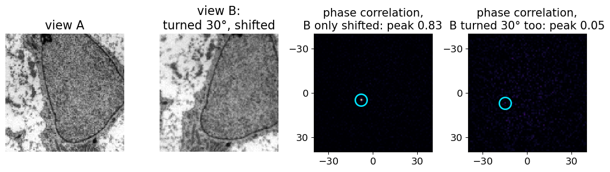
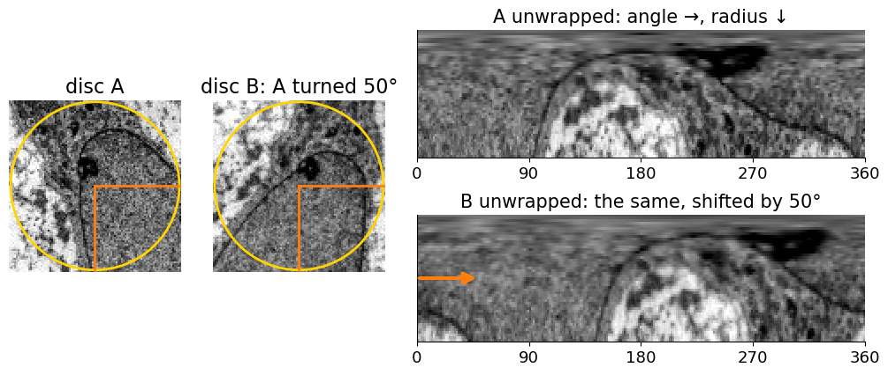
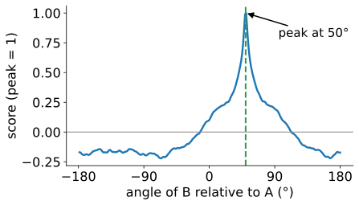
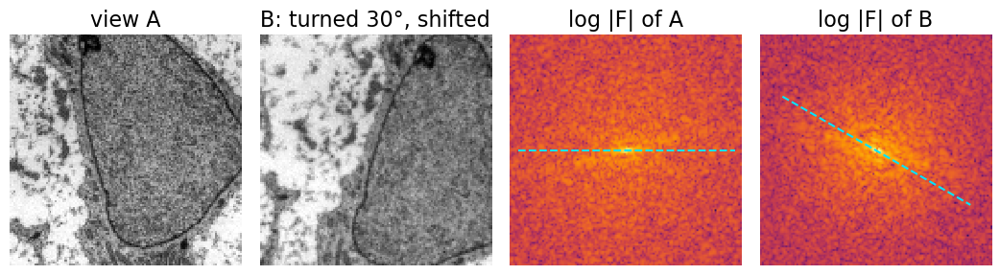
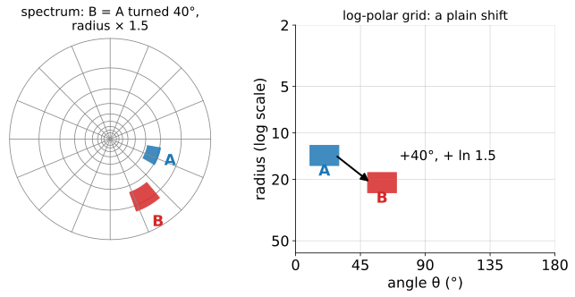
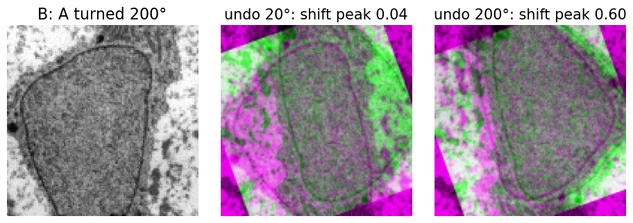
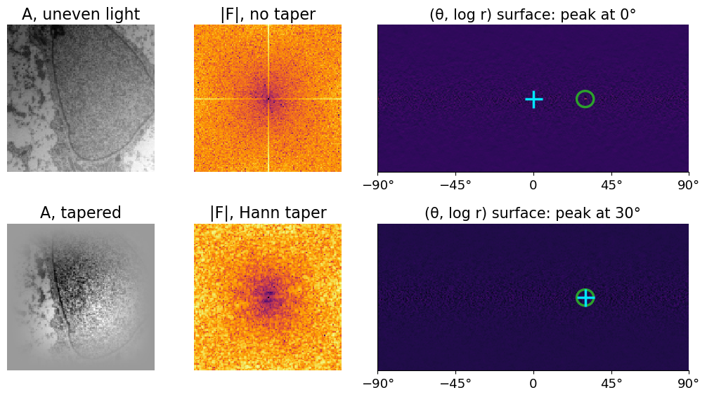
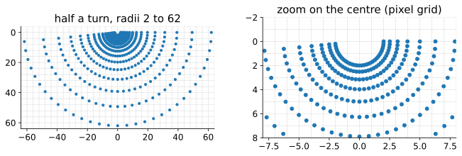
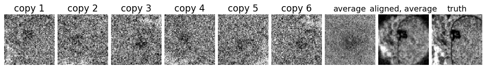

Rotation and scale become shifts: Fourier–Mellin
About this lecture
Phase correlation finds a shift with one FFT. Turn one image a little, and the spike is gone. Today: a change of coordinates in which a rotation, and even a change of scale, is a shift, so that the same tool finds it.
- Known centre: on a polar grid around the centre, a rotation shifts the angle. One FFT per ring gives every angle at once.
- Unknown centre: the magnitude spectrum ignores the shift but turns with the image; on a log-polar grid, rotation and scale are both shifts (Fourier–Mellin).
- The practical issues: the 180° ambiguity, taper, high-pass, interpolation, the usable range.
- Where it is used: tiles and slide scans, averaging thousands of particle images.
Recall: e^{i\alpha} turns a complex number by \alpha; a shift changes the phases of the Fourier coefficients, never their sizes.
Slides titled The math give the formulas and proofs; the ideas are complete without them.
The problem: a turned view
Two views of the same cell: B is shifted and turned by 30°.
- Shifted only: phase correlation gives a clean spike, height 0.83, peak ratio 41.
- Turned 30° too: the highest value is 0.05, at a wrong shift, ratio 1.04. Nothing is found.
- A shift compares the same pixels side by side. After a turn, the edges point in other directions: no shift lines them up.
Slides, scans and tiles taken by hand are often turned; zoom settings change the scale.

A rotation is a shift of the angle
Suppose we know the centre of the turn (a cell’s centroid, a particle centred by the microscope software).
- Read the image along circles around the centre: one row per radius, one column per angle (polar unwrap, the trick of closed boundaries by DP, day 33).
- Turning the image by 50° about that centre moves every circle along itself by 50°: in the unwrapped picture, every row shifts by the same number of columns, wrapping around.
- Rotation has become a circular shift, the problem phase correlation solves.

Every angle at once
For each candidate angle, compare the two unwrapped pictures ring by ring and add up.
- Each ring is a periodic 1D signal (the angle wraps around). Comparing all its shifts is a circular cross-correlation: one FFT (cross-correlation with the FFT).
- Do it for every ring and add the products of the spectra before the one inverse FFT: one score per angle.
- Here: the peak is at 50.0°; the next-best angle scores 65 % of the peak (a broad hill: this is plain correlation, not phase correlation).
Cost: one FFT per ring per image and one inverse FFT, instead of re-sampling the image for every angle.

The math: rotational correlation
Write each ring as a Fourier series in the angle: f(r, \theta) = \sum_m f_m(r)\,e^{im\theta}, g(r, \theta) = \sum_m g_m(r)\,e^{im\theta} (real images: f_{-m} = \overline{f_m}). For a turn by \alpha,
\int_0^{2\pi} f(r, \theta)\, g(r, \theta + \alpha)\,d\theta = 2\pi\sum_m \overline{f_m(r)}\; g_m(r)\; e^{im\alpha},
because \int_0^{2\pi} e^{i(m' - m)\theta}d\theta = 2\pi\,\delta_{mm'}. Summed over rings (weight r\,dr for the area),
S(\alpha) = 2\pi\sum_m \Big(\int \overline{f_m(r)}\,g_m(r)\,r\,dr\Big) e^{im\alpha}:
a Fourier series in \alpha, so one inverse FFT gives S at every sampled angle. The same fact as for Zernike moments: under a turn, the angular harmonic e^{im\theta} only picks up a phase e^{im\alpha}.
Rotational correlation as pseudocode
PA = polar unwrap of A around the centre # rows = rings, columns = angles
PB = polar unwrap of B
S = zeros(n_theta) # summed cross-power
for every ring i:
a = FFT(PA[i] − mean of PA[i]), b = FFT(PB[i] − mean of PB[i])
S = S + weight(i) · conj(a) · b
score = real part of inverse FFT(S) # one value per angle
angle = 360° · (position of the highest score) / n_thetaweight(i)= the radius, so that every pixel counts about equally.- Dividing
Sby its size before the inverse FFT turns it into a phase correlation along the angle: a sharper peak.
Try it: a known centre
Unknown centre: the magnitude spectrum
Usually B is turned and shifted, and we do not know about which point it turned. Remove the shift first:
- The magnitude spectrum |F| ignores shifts (a shift changes only the phases: the Fourier unit, B4).
- It turns with the image: a stripe pattern at 30° gives a spectrum line at 30°.
- It shrinks when the image grows: coarser detail means lower frequencies.
- So |F_B| is |F_A| turned by the same angle and scaled by 1/s, about the centre of the spectrum, which is always known.

Log-polar: scale becomes a shift too
Now unwrap |F| around its centre, with one twist: space the rings logarithmically (radii 2, 2.2, 2.4, …, each a fixed factor apart).
- A turn by \alpha moves everything along the angle: a shift of \alpha in columns.
- Scaling by s multiplies every radius by s; on a log scale that adds \ln s: a shift of \ln s in rows.
- Rotation and scale are now one 2D shift of the log-polar picture: phase correlation finds both at once.
- |F| is point-symmetric, so half a turn (180°) is enough.
Reddy & Chatterji (1996); for rotation alone, De Castro & Morandi (1987).

The math: Fourier–Mellin
Let B be A turned by \alpha and enlarged by s about the centre, then shifted by \mathbf t: \;b(\mathbf x) = a\big(R_{-\alpha}(\mathbf x - \mathbf t)/s\big). Substituting \mathbf u = R_{-\alpha}(\mathbf x - \mathbf t)/s (so d\mathbf x = s^2 d\mathbf u) in the continuous Fourier transform:
B(\mathbf k) = s^2\, e^{-2\pi i\,\mathbf k\cdot\mathbf t}\, A\big(s\,R_{-\alpha}\mathbf k\big) \quad\Longrightarrow\quad |B(\mathbf k)| = s^2\,|A(s\,R_{-\alpha}\mathbf k)|.
The shift is only a phase; it is gone from |B|. In log-polar coordinates \rho = \ln|\mathbf k|, \theta = \arg\mathbf k:
|B|(\rho, \theta) = s^2\, |A|(\rho + \ln s,\; \theta - \alpha):
a shift by (\alpha, -\ln s), found by phase correlation (the factor s^2 is removed by the normalisation). The Mellin transform \int_0^\infty f(r)\,r^{i\omega - 1}dr is the Fourier transform in \ln r; its magnitude ignores scaling, as |F| ignores shifts: hence the name.
Fourier–Mellin as pseudocode
MA = |FFT(taper · (A − mean))| · highpass # the shift drops out
MB = |FFT(taper · (B − mean))| · highpass
LA = log-polar(MA), LB = log-polar(MB) # θ over 180°, log-spaced radii
(u, v) = highest peak of phase correlation(LB, LA)
angle = 180° · u / n_theta, scale = exp(−v · log step)
for θ in {angle, angle + 180°}:
B' = B turned back by θ and shrunk by scale
(p, height) = highest peak of phase correlation(A, B')
keep the θ with the higher peak; the shift follows from its p- The last loop is the ordinary phase correlation of the previous day, run twice.
- Cost: about a dozen 2D FFTs and four resamplings; 0.1–0.2 s for 128 \times 128 in the browser.
All the steps

Try it: Fourier–Mellin
The 180° ambiguity
- The image is real, so its spectrum is point-symmetric: |F| looks the same turned by 180°. A turn by 200° and a turn by 20° give the same |F_B|.
- The log-polar step only says the angle modulo 180°.
- Resolve it with the final step: undo both candidates and phase-correlate each with A. The right one has a clear shift peak.
- Here: undo 20°, shift peak 0.04 (nothing); undo 200°, 0.60. Kept: 200°, shift (10.0, 4.9).

The math: symmetry and the final shift
Point symmetry. For a real image a, A(-\mathbf k) = \overline{A(\mathbf k)}, so |A(-\mathbf k)| = |A(\mathbf k)|: in polar coordinates |A|(\rho, \theta + \pi) = |A|(\rho, \theta). Turning B by \alpha or by \alpha + \pi gives the same |B|: the log-polar peak determines \alpha only modulo \pi, and half a turn of columns holds all the information.
The shift after the turn. Undo the angle and scale on B about the centre \mathbf c: b'(\mathbf x) = b\big(\mathbf c + s R_\alpha(\mathbf x - \mathbf c)\big). With \mathbf c = 0, b'(\mathbf x) = a\big(\mathbf x - R_{-\alpha}\mathbf t/s\big): a pure shift of A by \mathbf t' = R_{-\alpha}\mathbf t / s, which phase correlation finds; then \mathbf t = s\,R_\alpha\,\mathbf t'. For the wrong candidate \alpha + \pi, b' is A turned by 180°, and no shift matches it.
Taper and high-pass
- Taper: without it, the jumps at the image border give |F| a bright cross along the axes. The cross belongs to the frame, not the sample: it does not turn with B. Both spectra have it at 0° and 90°: the log-polar peak says “turned 0°, scale 1” (tapering). With uneven light (400 grey levels across): wrong without the taper, right with it.
- High-pass weight on |F|: the strongest values sit near the centre, at the smallest radii, which carry little about the direction. Reddy & Chatterji damp them by (1 - X)(2 - X), X = \cos\pi f_x \cos\pi f_y. Here it raises the peak from 0.23 to 0.29 (though the peak ratio drops from 9.0 to 7.6).
- But it also lifts the noise, which lives at high frequencies: with noise SD 25 the high-pass version fails, the plain one finds 30.0°.

Interpolation, small radii, range
- Log-polar samples fall between pixels: bilinear interpolation (inverse mapping).
- Near the centre, many samples share the same few pixels (oversampled, repeated values); far out, samples are sparse and miss detail. The innermost rings (radius below 2) are left out.
- The rows only reach r_{\max}: a scale s moves the content by \ln s rows and pushes part of it off the grid. And an enlarged view shares less content with A (scale 2: a quarter of its area).
- Usable range here: scales 0.65 to 1.9 right, 0.6 and 2 wrong. The literature quotes about 0.5–2.

Try it: where it breaks
Where it is used
- Turned tiles and slide scans: sections placed on the slide by hand, serial sections of tissue, a sample re-mounted between sessions. One Fourier–Mellin step gives a starting alignment.
- Cryo-EM 2D classification: thousands of very noisy images of the same particle, each at an unknown angle in the image plane. Aligning them in rotation (and shift) to class averages with polar correlations like these, then averaging, makes the structure visible.
- Cells before averaging: orient cells or nuclei (centroid as the known centre) to build an average shape or an average stain pattern.

Summary
- Around a known centre, a polar unwrap turns a rotation into a circular shift of the angle; summing one FFT correlation per ring scores every angle at once.
- With an unknown centre, take the magnitude spectrum: the shift drops out, the turn and the scale remain, about the spectrum’s centre.
- On a log-polar grid of |F|, rotation and scale are one 2D shift: phase correlation finds both (Fourier–Mellin). Then undo them and phase-correlate once more for the shift.
- |F| is point-symmetric: test θ and θ + 180° by the final peak. Taper the images (the border cross does not turn); the high-pass sharpens the peak but lifts noise.
- Usable for scales of roughly 0.5–2 and images that share most of their content; beyond that, match features instead (keypoints, day 25).